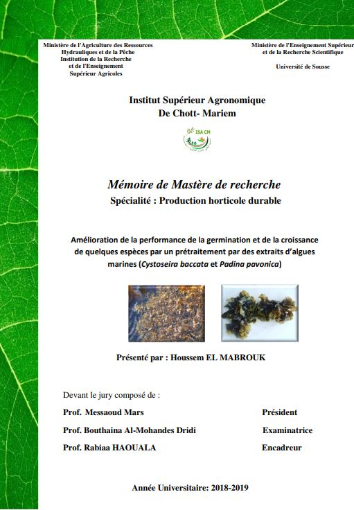

  <!-- Product section-->
  <section class="py-5">
    <div class="container px-4 px-lg-5 my-5">
        <div class="row gx-4 gx-lg-5 align-items-center">
            <div class="col-md-6"></div>
            <div class="col-md-6">
                <div class="small mb-1">Présenté par :</div>
                <h1 class="display-5 fw-bolder">Houssem EL MABROUK </h1>
                <div class="fs-5 mb-5">
                    <span class="text-decoration-line-through"></span>
                    <span></span>
                </div>
                <p class="lead"> 
                    Cette étude évalue l'effet du prétraitement des graines de carotte, lin, maïs, et persil avec les extraits d’algues marines Cystoseira baccata et Padina pavonica sur leur germination et croissance. Les extraits aqueux ont été utilisés à différentes concentrations (20 à 100 g/l). Après prétraitement et séchage, les graines ont été mises à germer. Les résultats ont révélé une amélioration générale des paramètres de germination, particulièrement pour la carotte....</p>
                <p class="lead">Les concentrations les plus efficaces étaient de 80 g/l pour l’extrait de C. baccata et 20 g/l pour P. pavonica. Les extraits ont eu des efficacités variables pour chaque espèce. En outre, le prétraitement a positivement impacté la croissance des plantules, avec une augmentation significative de la longueur des racines et des parties aériennes. Les stimulations les plus fortes ont été observées chez les plantules de carotte et de maïs prétraitées avec l’extrait de P. pavonica, et chez celles de lin et de persil avec l’extrait de C. baccata. Cette amélioration semble liée à une meilleure intégrité membranaire, une respiration mitochondriale améliorée, et une augmentation des sucres solubles totaux. Le priming des graines avec ces extraits apparaît donc comme une méthode fiable pour améliorer la croissance et la germination, et pourrait être utilisé pour augmenter les rendements des cultures.</p>
                <div class="d-flex text-center">
                    <input class="btn btn-outline-dark flex-shrink-0"  (click)="downloadPdf()" type="button" value="télécharger"  />
                    <button class="btn btn-outline-dark flex-shrink-0" type="button" (click)="downloadPdf()"  >
                        En savoir plus
                    </button>
                </div>
            </div>
        </div>
    </div>
</section>
<!-- pdf-viewer.component.html -->
